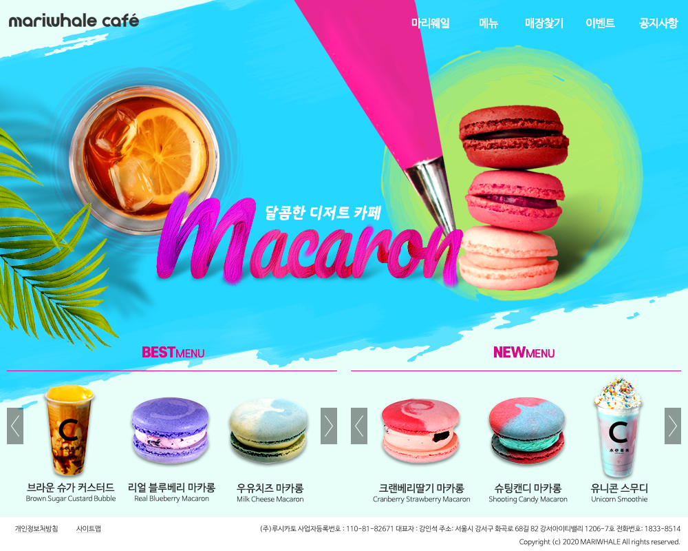
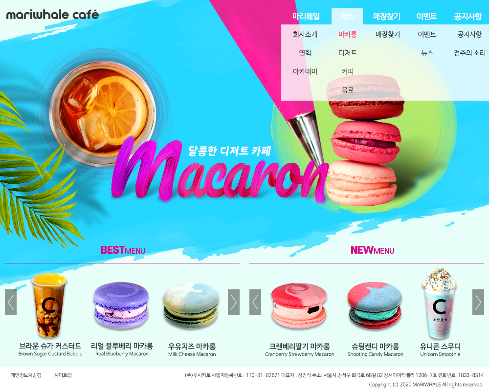

마리웨일 cafe 웹UI/UX Design
Overview
마카롱을 포함한 디저트류를 판매하는 마리웨일 카페 웹을 리뉴얼하였습니다. 마카롱 필링에서 연상되는 텍스처 질감을 전반적인 컨셉으로 레이아웃 디자인했습니다.
-
- 작업 기여도
- 개인작업 100%
-
- 작업 프로그램

Concept
- Analysis
- 마카롱, 스무디 등 다양한 화려한 색감의 디저트류를 판매하는 카페입니다.
- Design Concept
- 판매상품들의 화려한 색상들을 강조하기 위하여 채도가 높은 컬러 위주로 사용하였으며, 마카롱 필링의 텍스처 질감이 연상되는 붓터치 효과를 포토샵을 이용하여 표현하였습니다. 더불어 주 상품인 스무디에 맞는 여름 계절감을 살려 디자인했습니다.
- Keyword
-
- # 붓터치
- # 다채로운 느낌
- # 여름
- Mood Board
- Color
-
- #F22EAE
- #D70CF2
- #27DEF2
- #E8FFF9
- #BFF272
- Typo
-
-
- Pacifico Italic
- 삼립호빵체
- 에스코어드림 Bold
-
- 나눔바른고딕 Bold
- 나눔바른고딕 Medium
- 나눔바른고딕 Light
- 나눔바른고딕 ExtraLight
-
Work Process
포토샵의 펜툴과 붓터치로 타이포그래피를 하고, 붓터치 효과를 통한 전체 레아이웃 디자인을 했습니다.
Output
Main Display(width * height) : 1000px * 800px
- MainPage
- TopMenu
- 
- 